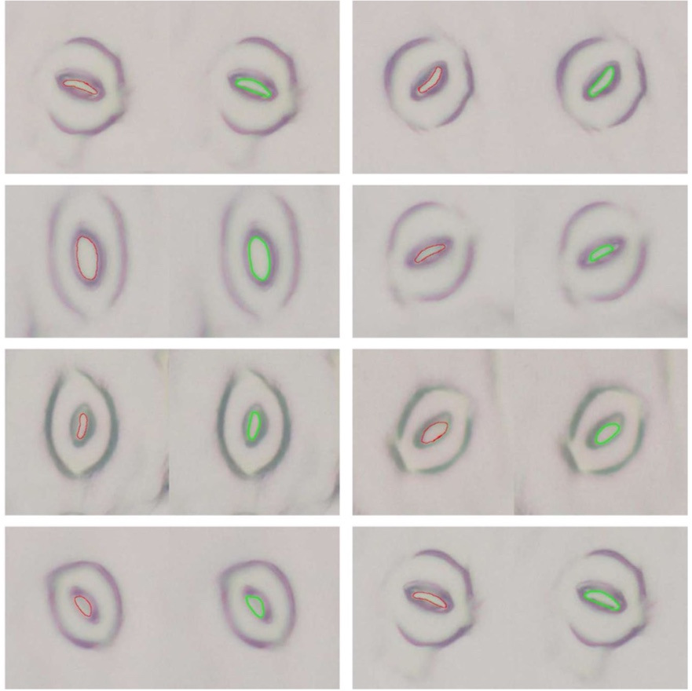

Datasets CAE2020: A Vision Based Robust Grape Berry Counting Algorithm for Fast Calibration-free Bunch Weight Estimation in the Field - Paper Dataset JBE2018: A Robust Automated Flower Estimation System for Grape Vines - Paper Dataset  Plant Methods 2017: Microscope image based fully automated stomata detection and pore measurement method for grapevines - Journal Dataset ICRA2015: A Lightweight Method for Grape Berry COunting based on Automated 3d Bunch Reconstruction from a Single Image - Paper Dataset